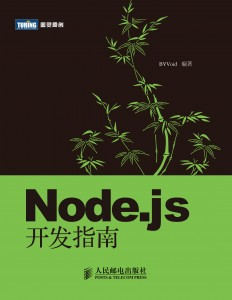
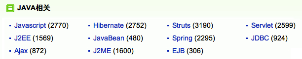
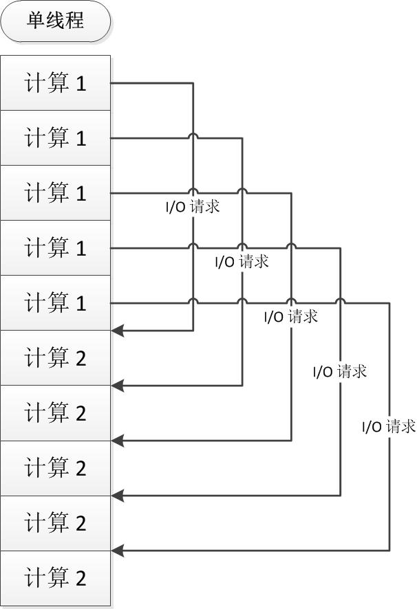

A Brief Introduction
關於我
- 郭家寶/Carbo Kuo/BYVoid
- 清華大學計算機系本科生，現在大三
- 《Node.js開發指南》作者 
- 清華大學開源鏡像維護者之一
- 語言學愛好者，簡化字反對者
- 我的網站 www.byvoid.com
Node.js是什麼
- 一個重新定義了JavaScript的平臺
- 一個打通了Web前端與後端開發隔膜的技術
- 一個完全基於事件驅動、非阻塞I/O的架構
總而言之，Node.js是一個讓JavaScript運行在瀏覽器之外的工具。
JavaScript是什麼
在過去，JavaScript因爲其運行效率低下和兼容性差而廣受詬病
而今天，它卻是運行最快的腳本語言之一，而且無處不見，擁有「Web時代的彙編語言」之稱
它是如何誕生的？
Netscape與LiveScript
這還要追溯到互聯網泡沫時代的Netscape公司
1995年，Netscape爲了使網頁更有動感，發明了LiveScript
同時，如日中天的Sun公司也在不遺餘力地推廣着Java Applet
在市場部門的干預之下，LiveScript就改名JavaScript了
Java……Script?
對外行來說，這個名字有着嚴重的誤導作用
儘管在StackOverflow上有人說「Java和JavaScript的關係，就像Car和Carpet的關係一樣]
我們還是可以看到這樣的景象：

JavaScript到底是什麼
正如混亂的瀏覽器兼容性問題一樣，JavaScript這個名字本身的含義就存在爭議：
《JavaScript: The Definitive Guide》認爲，JavaScript = ECMAScript + DOM + BOM
Mozilla則指出，JavaScript = Core JavaScript + Client JavaScript
Node.js與JavaScript
Node.js = Core JavaScript + Node Standard Library
沒有瀏覽器兼容性問題
基於世界上最快的JavaScript引擎——V8
Node.js標準庫包含了模塊引入、包管理、文件系統、網絡通信、操作系統API等核心JavaScript沒有實現的功能
Node.js使JavaScript不再是腳本語言世界的二等公民
Hello World
var http = require('http');
http.createServer(function(req, res) {
res.writeHead(200, {'Content-Type': 'text/html'});
res.write('<h1>Node.js</h1>');
res.end('<p>Hello World</p>');
}).listen(3000);Node.js REPL
Node.js提供了和Python類似的REPL(Read-Evaluation-Print-Loop)環境：
$ node
> for (var i = 0; i < 5; i++) {
... console.log('Hello ' + i);
... }
Hello 0
Hello 1
Hello 2
Hello 3
Hello 4
undefined模塊機制
模塊(Module)是Node.js的基本組成部分，一個文件就是一個模塊
模塊可以是JavaScript代碼文件、JSON文件，或者編譯過的C++擴展
使用require函數可以加載一個模塊。
var http = require('http');
var os = require('os');
var fs = require('fs');
var vm = require('vm');
var child_process = require('child_process');
本地模塊
創建module.js，通過exports對象定義接口：
var name;
exports.setName = function(thyName) {
name = thyName;
};
exports.sayHello = function() {
console.log('Hello ' + name);
};
另一個文件中：
var myModule = require('./module');
myModule.setName('BYVoid');
myModule.sayHello(); // Hello BYVoid
Node.js包管理器 (npm)
獲取一個包，例如安裝express：
$ npm install express
express@3.0.3 node_modules/express
├── fresh@0.1.0
├── methods@0.0.1
├── range-parser@0.0.4
├── cookie-signature@0.0.1
├── cookie@0.0.5
├── crc@0.2.0
├── commander@0.6.1
├── debug@0.7.0
├── mkdirp@0.3.3
├── send@0.1.0 (mime@1.2.6)
└── connect@2.7.0 (pause@0.0.1, bytes@0.1.0, formidable@1.0.11, qs@0.5.1)
本地模式與全局模式
npm默認使用本地模式，即將包安裝到node_modules目錄中，而使用全局模式會將包安裝到系統目錄。
使用全局模式安裝一個包：
$ npm install -g less| 模式 | 可通過require使用 |
可以在命令行中使用 |
|---|---|---|
| 本地模式 | 是 | 否 |
| 全局模式 | 否 | 是 |
異步I/O與事件式編程
如果Node.js僅僅是爲JavaScript包裝了一層運行時環境，它絕對沒有今天這麼火。 異步I/O與事件式編程模型纔是Node.js最大的特點。
同步I/O
res = db.query('SELECT * from some_table');
res.output();異步I/O
db.query('SELECT * from some_table', function(res) {
res.output();
});同步與異步
程序執行I/O操作通常要花費很長時間，長達數十萬到數億個CPU指令週期。 因此操作系統和CPU通過中斷實現了異步的調度方式。
進程發起I/O請求時，操作系統會掛起進程，將CPU自由讓給其他工作的進程。 當I/O完成以後，操作系統會使進程繼續執行。 這種請求方式稱爲同步I/O或阻塞式I/O。
異步I/O與事件機制
異步I/O又叫非阻塞I/O。 指的是進程發起I/O請求以後就繼續執行其他指令，通過其他手段來獲得請求完成的通知。
「其他手段」可能是定期輪詢（如select），也可能是事件機制。 使用事件機制時，整個程序是一個事件循環，不斷檢查並執行事件隊列中尚未處理的事件。
事件與回調函數
當非阻塞的I/O發起時，進程不會阻塞，繼續執行事件的其他部分，然後進入事件循環處理其他事件。
異步I/O完成以後會以事件的形式加入事件隊列，等待進程以後進入事件循環時處理。
I/O完成以後的邏輯通過回調函數描述
db.query('SELECT * from some_table', function(res) {
res.output();
});回調函數
db.query('SELECT * from some_table', function(res) {
res.output();
});這段代碼又可以寫成：
db.query('SELECT * from some_table', afterSelect);
function afterSelect(res) {
res.output();
});並發模型
阻塞模式下，一個進程只能處理一項任務，哪怕只有一個CPU核，要想提高吞吐量也必須通過多線程。
非阻塞模式下，進程對一個CPU核的利用率永遠是100%，單個線程即可達到單核心的最高吞吐量。
對於多核CPU，阻塞模式需要使用大量線程，而非阻塞模式只需要與CPU核心數目相等的線程即可達到最大利用率。
阻塞式並發模型
非阻塞式並發模型

並發模型特點
| 阻塞I/O | 非阻塞I/O |
|---|---|
| 利用多線程提供吞吐量 | 單線程即單核最高吞吐量 |
| 通過時間片分割和線程調度利用多核 | 通過功能劃分利用多核 |
| 需要由操作系統調度多線程對多核 CPU 的使用 | 可以將單進程綁定到 CPU 單個核心 |
| 難以保證 CPU 高度利用 | 可以佔滿 CPU 資源 |
| 內存軌跡大，數據局部性弱 | 內存軌跡小，數據局部性強 |
| 符合線性編程思維，調試容易 | 需要狀態機設計思維，調試難 |
回調函數的陷阱
使用回調函數的方法，很容易寫出這樣的代碼：
function func(callback) {
fs.readFile('1.txt', 'utf-8', function (err, contents1) {
if (err) return callback(err);
fs.readFile('2.txt', 'utf-8', function (err, contents2) {
if (err) return callback(err);
fs.writeFile('3.txt', contents1 + contents2, function (err) {
if (err) return callback(err);
callback();
});
});
});
}Callback Pyramids
更深的嵌套
var addUser = function(uid, callback) {
mongodb.open(function(err, db) {
if (err) {callback(err); return;}
db.collection('users', function(err, collection) {
if (err) {callback(err); return;}
collection.ensureIndex("uid", function(err) {
if (err) {callback(err); return;}
collection.ensureIndex("username", function(err) {
if (err) {callback(err); return;}
collection.findOne({uid: uid}, function(err) {
if (err) {callback(err); return;}
if (doc) {
callback(new Error('occupied'));
} else {
collection.insert({uid: uid}, function(err) {
callback(err);
});
}
});
});
});
});
});
};
Continuation Passing Style
這種通過回調函數進行顯式的控制流傳遞的代碼稱爲「Continuation Passing Style (CPS)」
CPS代碼通常使用嵌套的回調函數來組織，線性的邏輯被拆散到不同的回調函數中
然而，用CPS代碼來描述複雜的邏輯對人工來說，難寫、難調、難改
怎麼辦？
Continuation.js
Continuation.js是一個通過編譯的手段，將嵌套的回調函數平面化的工具。 通過它你可以像寫同步I/O的代碼一樣產生CPS的代碼。
- 無任何運行時依賴，無額外語法
- 兼容Node.js和瀏覽器JavaScript
- 兼容已有的嵌套回調函數風格的代碼
- 默認使用JIT運行，同時支持AOT編譯
- 支持I/O並行化
$ npm install -g continuationContinuation.js
通過Continuation.js重寫前面的代碼：
function func(next) {
try {
fs.readFile('1.txt', 'utf-8', obtain(contents1);
fs.readFile('2.txt', 'utf-8', obtain(contents2);
fs.writeFile('3.txt', contents1 + contents2, obtain());
next();
} catch (err) {
next(err);
}
}Continuation.js
使用Continuation.js，你還可以輕易寫出用異步難以描述的邏輯：
var fib = function () {
var a = 0, current = 1;
while (true) {
var b = a;
a = current;
current = a + b;
setTimeout(cont(), 1000);
console.log(current);
}
};
fib();以上代碼是計算Fibonacci數列，每秒輸出一項。
Node.js可以做什麼（第三方模塊）
- Web框架：
express - HTML模板引擎：
jade - CSS模板引擎：
less - JavaScript壓縮：
uglify-js - WebSocket：
socket.io - SQL數據庫ORM：
sequelize - MongoDB ORM：
mongoose - OAuth：
node-oauth - 自動編譯工具：
grunt - 守護進程、日誌和故障恢復：
forever - 自動化測試框架：
mocha - 命令行解析工具：
commander - 語法解析：
jison - 基於WebInspector的調試器：
node-inspector
Node.js可以做什麼（第三方模塊）
- 文檔對象模型(DOM)處理：
jsdom - 文件上傳：
formidable - Markdown解析：
marked - 語法高亮：
highlight.js - 本地圖形界面應用：
node-webkit - 編碼轉換：
iconv-lite - 圖像處理：
imagemagick - 同步代碼變換：
continuation - 異步函數庫：
async - 輕量級線程、協程：
fibers - 編譯到JavaScript：
coffee-script - 遠程過程調用(RPC)：
dnode - 瀏覽器端代碼生成：
browserify - JavaScript靜態分析和錯誤檢查：
jshint
The End
謝謝大家
http://www.byvoid.com